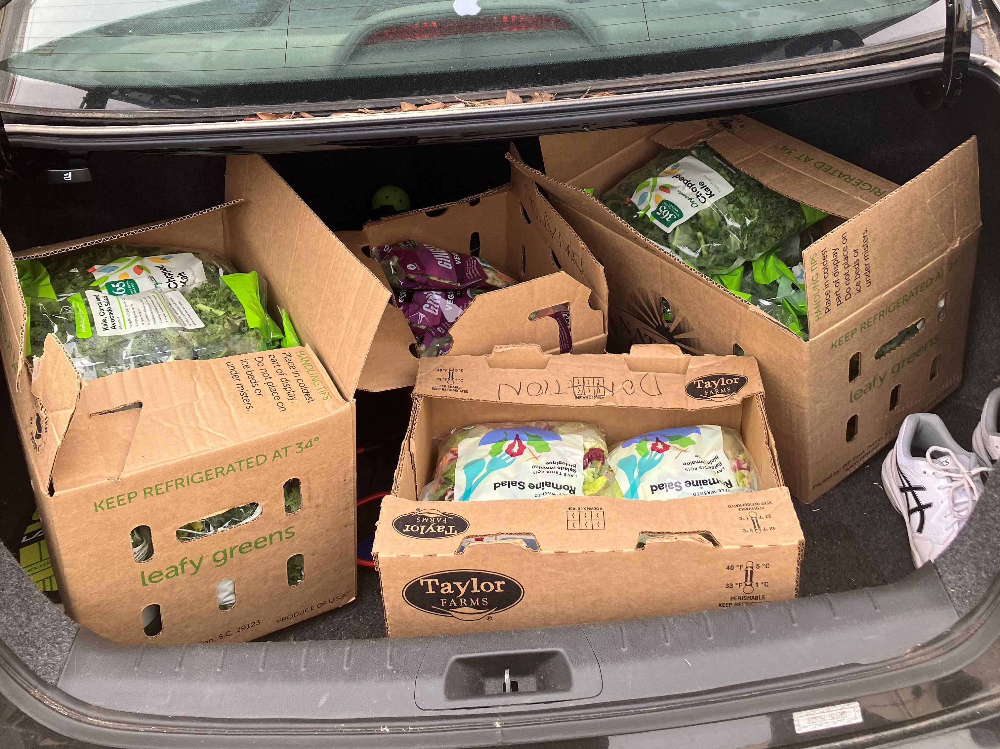

COMMUNITY IMPACT
Local intitiatives
Being located at the Community Empowerment Fund (CEF) off Franklin Street, our fridge is accessible to both students and community members. Many of the individuals who come into CEF are housing insecure, so having access to fresh food is absolutely essential and invaluable. The community fridge has become a core part of CEF.
